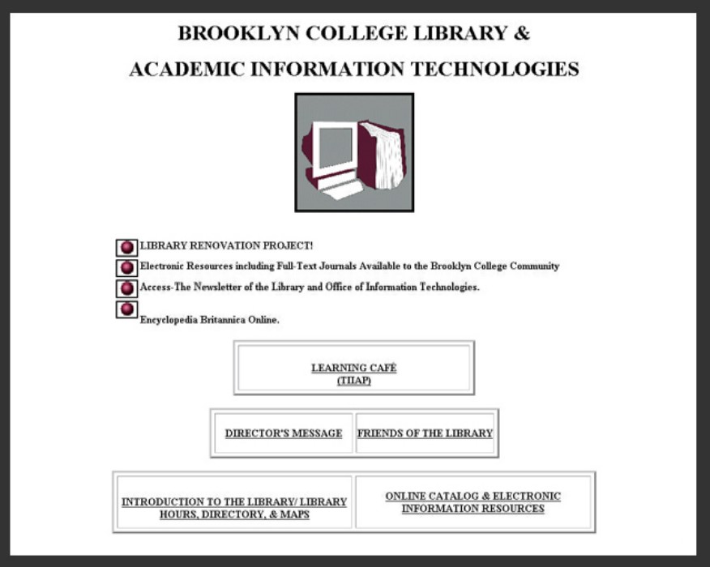
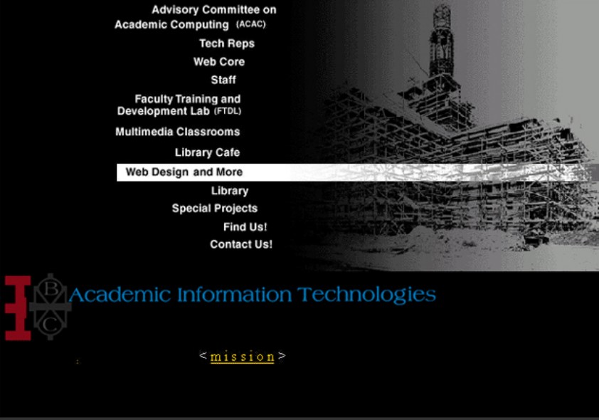
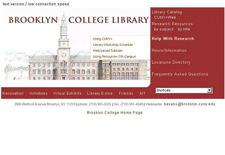

Work
Requirements, high-level design, project management, and workshops.
Areas
Career detail · Brooklyn College
I joined as a liaison between the Computer Science and Art departments, creating templates and managing departmental intranet development. As demand grew, the work shifted toward requirements, high-level design, project management, and teaching workshops.
Requirements, high-level design, project management, and workshops.
Early web and content-production tools used across departmental intranet work.
Late 1990s redesign
The starting point was a single Brooklyn College Library & Academic Information Technologies site. The assignment was to create separate sites for the Library and AIT, with Photoshop and HTML presentations delivered to department heads.
The work went beyond visual modernization. It also reorganized the information and gave each group a clearer identity and structure.



Complex table layouts, rollovers, skeuomorphic buttons, deep linking, and breadcrumbs were relatively advanced web techniques. The sites had little interaction by current standards, but the presentation and navigation represented a substantial change from what came before.
The main UX weakness was not pushing back hard enough on management's preference for exposing organizational structure and internal labeling. That is exactly the kind of issue I would challenge much more strongly now.
Career shift
Creating templates and managing departmental intranet development expanded into requirements, design, project management, and workshops.
Continue through the chronological portfolio.